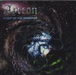

Home Artist links Label link

| Artist: | Ayreon |
| Title: | Flight Of The Migrator |
| Label: | Transmission TM-020 |
| Length(s): | 65 minutes |
| Year(s) of release: | 2000 |
| Month of review: | 07/2000 |
Line up
Arjen Anthony Lucassen - electric and acoustic guitars, bass, analog synths,
Mellotron, Hammond, keyboards
Ed Warby - drums
Erik Norlander - analog synths, taurus pedal, vocoder voice, hammond, keyboards
Peter Siedlach - strings
Guitar solo's:
Lucassen on 1, 4, 5, 7, 8, 9
Michael Romeo on 2
Oscar Holleman 2nd solo on 4
Gary Wehrkamp on 6
Synth solo's:
Erik Norlander on 1, 3 (Hammond), 4, 5, 7
Rene Merkelbach last solo on 4
Clive Nolan 2nd synth solo on 5
Gary Wehrkamp on 6
Keiko Kumagai on 9 (+ Hammond solo)
The singers are Sir Russel Allen (2), Ralf Scheepers (3), Andri Deris (4),
Bruce Dickinson (5), Fabio Lione (6), Timo Kotipelto (7),
Robert Soeterbroek (8) and Ian Parry (9).
Backing vocals by Damian Wilson on 2 and Lana Lane on 4, 5, 6, 9 and voice
on 1.
Tracks
| 1) | Chaos | 5.10
|
| 2) | Dawn Of A Million Souls | 7.45
|
| 3) | Journey On The Waves Of Time | 5.47
|
| 4) | To The Quasar | 8.42
|
| 5) | Into The Black Hole | 10.25
|
| 6) | Through The Wormhole | 6.05
|
| 7) | Out Of The White Hole | 7.11
|
| 8) | To The Solar System | 6.11
|
| 9) | The New Migrator | 8.15
|
Summary
A disadvantage of the Ayreon cds is that I have so much to type in the line
up section. The advantage is that notwithstanding an all star cast, the focus
is always on the music and the music is good. If you've read the review
of the first part, the melodic and atmospheric journey, you know I was
particularly happy with it. Both discs say on the back that they are the
first part of a 2cd release. One of them must be wrong, and in fact this
is the second part.
The music
Like the first one it album opens with Lana Lane introducing the concept.
The difference is that afterwards the music takes a turn for progmetal. The
music reminds me a bit of Rhapsody, fast and classically oriented. Instead
of the melodies of the first part, we now should yield to the energetic
soloing on this second part. Some the keyboard work reminds me of Keith Emerson
and because of the metal one may be tempted to think of Mastermind here.
Dawn Of A Million Souls opens with keyboards, quite heavy symhponic passages
here. The chorus, sung by Sir Russel Allen, reveals the typical accessible
vocal lines that Ayreon tends to. The cosack choirs support the chorus, while
the verses are more typically masculin hard rock vocals. After an intermezzo
on strings and the return of the vocals, Symphony X's Michael Romeo plays
a sharp yet melodic guitar solo. Violin opens Journey On The Waves Of Time
and later on some symphonic keyboards are to be heard. The vocals on this
track are quite aggressive. This is rather typical powermetal and I'm not that
fond of it, although Norlanders Hammond solo is quite a nice passage and
the eerie keyboards in the vocal parts are also quite nice. Warby behind the
drums seems to feel right at home. The two parted To The Quasar is the next
one up. The partly vocoded vocals are by Andi Deris. The first part is
rather relaxed, but the powerfully rhthm guitars of the second part are
impressive. In this way from the melodic first part we transition into
pumping progmetal with low bass playing and Lana Lane singing one of her
high pitched backing vocals. Still I have to admit that compositionally
and melodically the first disc is better. It might be that the heaviness
of the music drowns out detail, but I get more the impression that the
heaviness of the music lets one get away with more. The songs are well
structured, everything fitting together well, but the melodies lag behind a bit
and also the soloing is more of the meandering kind. The longest track is
Into The Black Hole that opens triumphantly and harkens back melodically
to the foregoing. Then the music winds down and Dickinson starts to sing.
The guitar sounds as a mix between bass and acoustic guitar in he beginning
and in the anthemic chorus we find the opening theme returning. This is
a very good track, also in the dramatic melodic lines of the verses.
Halo Of Darkness is the second part of this track. The vocals are more
aggressive here and less melodic. The Final Door signifies a return to the
laden atmospheres of the first part with a majestic final including a fastpaced
keyboard solo probably by Clive Nolan. I have to admit that the high pitched
guitar work also reminds me of Arena. Hmm. Through The Wormhole has an opening
in which sequencers take the fore. Of course the guitar does everything to put
that to right and quickly we find ourselves in troubled waters. Pumping
keyboards/organ and guitarwork, the hasty vocals of Rhapsody's Lione
lend a nervous quality to this track. Out Of The White Hole continues the
heavy line of the previous track, but the verses are rather relaxed. The verses
are not that distinctive. Planet Y is visited, but does not happen to be
what we were looking for. There are some nice variations in the vocals on this
second part, although the seems to be sung in fairly straightforward manner.
After another orchestral break point The Search Continues and the vocals
of the first part return. To The Solar System finds us near Earth, or does it?
Shards of familiar melodies prop up. Soeterbroek opens with dark, somber
vocals, but the chorus sounds more optimistic. In fact, it is rather typical
for Ayreon. The fast monotonous percussive sounds lend an industrial and
menacing air to the music. After an experimental end in which the system
breaks down we arrive at the conclusion of the second part. After a slow
opening we get a particularly driving passage in Sleeper Awake that recurs
later in the frantic chorus. Very good. At times I'm reminded of Rainbow here,
but of course the music is a tad heavier and faster. Keiko of Ars Nova does
well soloing on the synths and organ.
As to the artwork: as good as that on the first disc. It struck me that
the picture of Lucassen in the booklet of the first cd is used as inspiration
for the drawing on the cover of the second, but the picture of Lucassen in the
booklet of the second is a different one.
Conclusion
Quite a heavy album this one and I like it less than the first part (but then
again I liked that one very much). Powerful music, some good melodies, well
played and produced (of course) and on the whole a satisfying progmetal album,
that does reveal many of the typical Ayreon manner and styles, but also
features echoes of current progmetal bands. Recommended to progmetal lovers,
but if you are more the typical prog or even ballad type, then the first part
should be more in your line.
© Jurriaan Hage